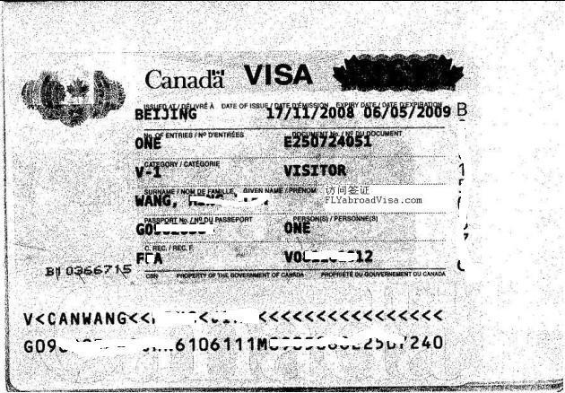

FLYabroad 加拿大探亲签证拒签二签经典案例分析
1. 08年11月份，武汉王小姐，欲前往加拿大探望留学后留在加拿大工作的丈夫
第一次自己递交申请，材料准备了很多，接近于团聚移民的材料量，探亲理由写的也很充分，邀请人和申请人都郑重声明不会滞留，结果还是拒签。
后来从网上了解到 FLYabroad，通过几次电话邮件沟通便把二签委托给了 FLYabroad 签证工作室。签约后 3 天在 FLYabroad 签证工作室的帮助下，二次申请于2008.12.2 递交北京签证处理中心，并于 2008.12.5收到王小姐的签证。王小姐激动万分，不敢相信这是事实。收到快递回的签证后，王小姐表示一定要把 FLYabroad 签证工作室介绍给更多的探亲拒签的朋友。
点评：要充分理解探亲签证的特点， 材料不是提供的越多越好， 而是越精越好； 这点在王小姐的申请里是充分体现出来的。
2. 08年11月份，大同杨先生夫妇（均已退休）， 欲前往加拿大探望经济状况很好的女儿（常驻居民，单身）
第一次由于移民倾向拒签； 二次申请通过FLYabroad签证工作室3天拿到签证。
点评： 夫妻两人（尤其是退休后）一同前往加拿大探亲的拒签风险往往很高，探亲签证主观性很强，材料准备的技巧性往往起关键性作用。
3. 08年10月，李女士欲前往加拿大看望女儿及刚出生不久的外孙
李女士名下拥有 3 家公司，经商 20 余年，3 处高档房产，丈夫同样为商业精英。加拿大的女儿是常驻居民，在家照看孩子。
第一次申请由于材料准备不妥当以移民倾向理由拒签，通过朋友的介绍了解到 FLYabroad，二次申请通过FLYabroad签证工作室的帮助2天顺利拿到签证。这是自增设签证处理中心以来，历时最短的探亲签证案例。
点评：资料的合理性与清楚恰当的表述是二签申请成功的关键。客户对 FLYabroad 及签证工作室工作的感受和评价。
要了解更多 FLYabroad 加拿大探亲签证代理服务请点击这里。
近期探亲拒签案例二签成功申请原因分析
- 婆婆探亲签证拒签二签及面试辅导：儿媳怀孕能成为探亲的理由吗?
- 配偶探亲签证拒签二签（探望丈夫）：一定要把 FLYabroad 签证工作室介绍给更多的探亲拒签的朋友。
- 母亲探亲签证拒签二签：太谢谢你们了， 我对你们的服务很满意！
参考：
加拿大联邦技术移民；
魁北克技术移民 ；
澳大利亚移民 。
加拿大探亲签证（临时访问签证）；
加拿大各省最新团聚移民 2008 年最新；
加拿大各省省提名技术移民；